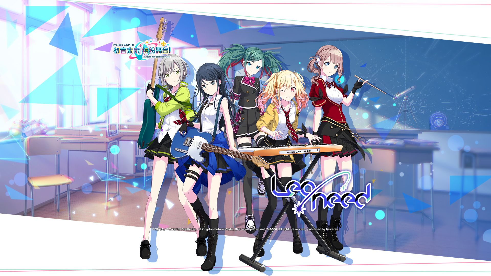
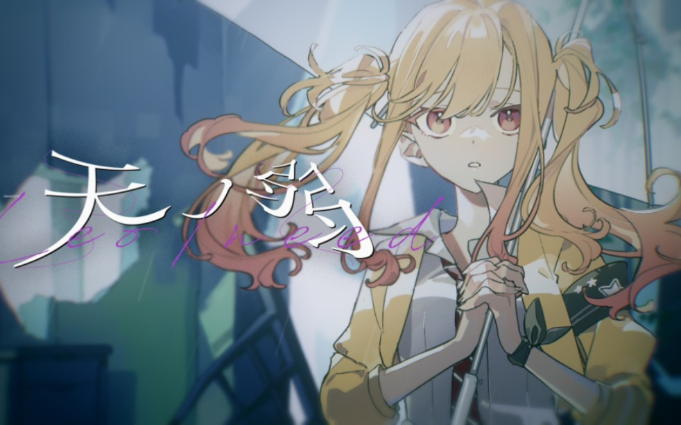

Leo/need
简介

乐队组成
星乃一歌 望月穗波 天野咲希 日野森志步
在狮子座流星雨前，四人一同许下的心愿是……？
跳转到bilibili观看PV
代表歌曲
天ノ弱

歌词
天ノ弱 - Leo/need
词：１６４
曲：１６４
编曲：１６４
僕がずっと前から
思ってる事を話そうか
友達に戻れたらこれ以上は
もう望まないさ
君がそれでいいなら
僕だってそれで構わないさ
嘘つきの僕が吐いた
はんたいことばの愛のうた
今日はこっちの地方は
どしゃぶりの晴天でした
昨日もずっと暇で
一日満喫してました
別に君のことなんて
考えてなんかいないさ
いやでもちょっと本当は
考えてたかもなんて
メリーゴーランドみたいに回る
僕の頭ん中はもうグルグルさ
この両手から零れそうなほど
君に貰った愛はどこに捨てよう?
限りのある消耗品なんて僕は
要らないよ
僕がずっと前から
思ってる事を話そうか
姿は見えないのに
言葉だけ見えちゃってるんだ
僕が知らないことがあるだけで
気が狂いそうだ
ぶら下がった感情が
綺麗なのか汚いのか
僕にはまだわからず
捨てる宛てもないんだ
言葉の裏の裏が見えるまで
待つからさ
待つくらいならいいじゃないか
進む君と止まった僕の
縮まらない隙を何で埋めよう?
まだ素直に言葉に出来ない僕は
天性の弱虫さ
この両手から零れそうなほど
君に渡す愛を誰に譲ろう?
そんなんどこにも宛てが
あるわけないだろ
まだ待つよ
もういいかい
明日的夜空哨戒班
跳转到bilibili观看视频
关键剧情
雨过天晴的启明星